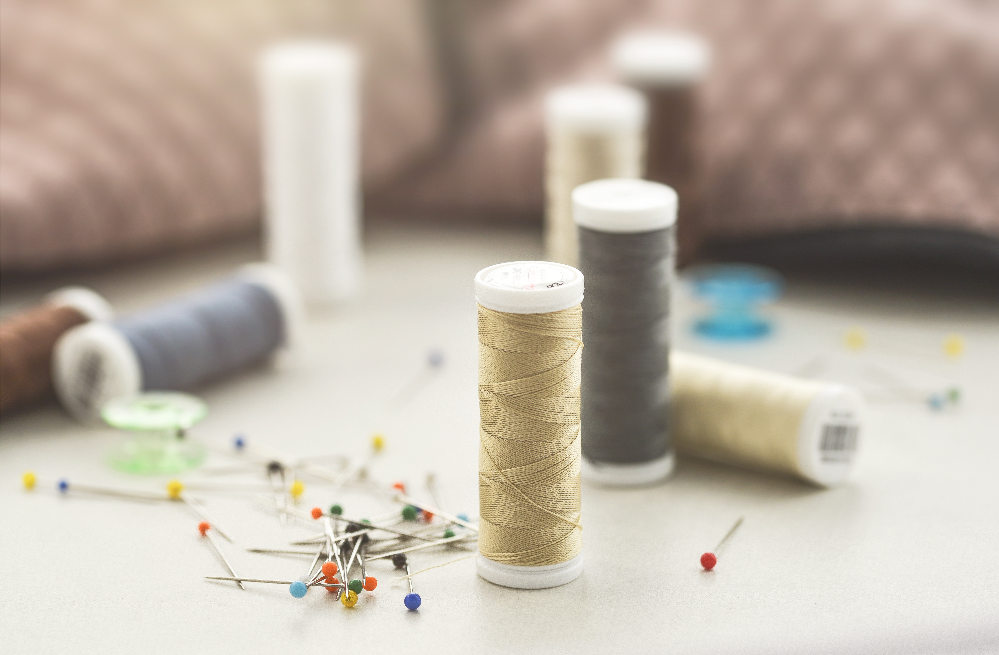
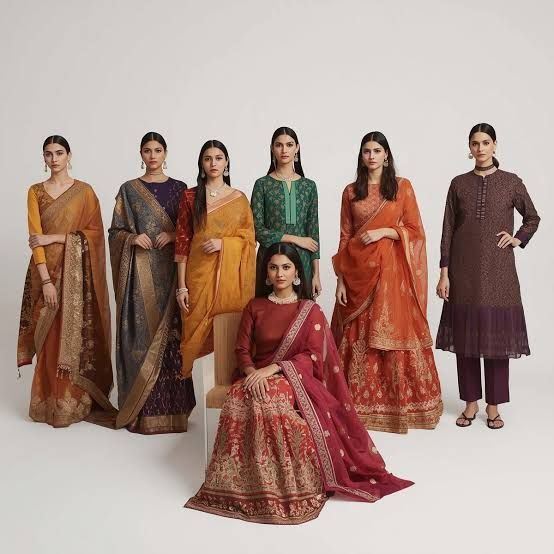

Why Personalized Custom-Stitched Clothes Matter
Discover how a perfect fit and fabric choice can transform your confidence and comfort.
Read MoreStories, style tips and the art of custom tailoring.

Discover how a perfect fit and fabric choice can transform your confidence and comfort.
Read More
From contemporary lehengas to versatile blouses — the trends worth trying this season.
Read More
How instant refits and small alterations save your favorite outfits.
Read More